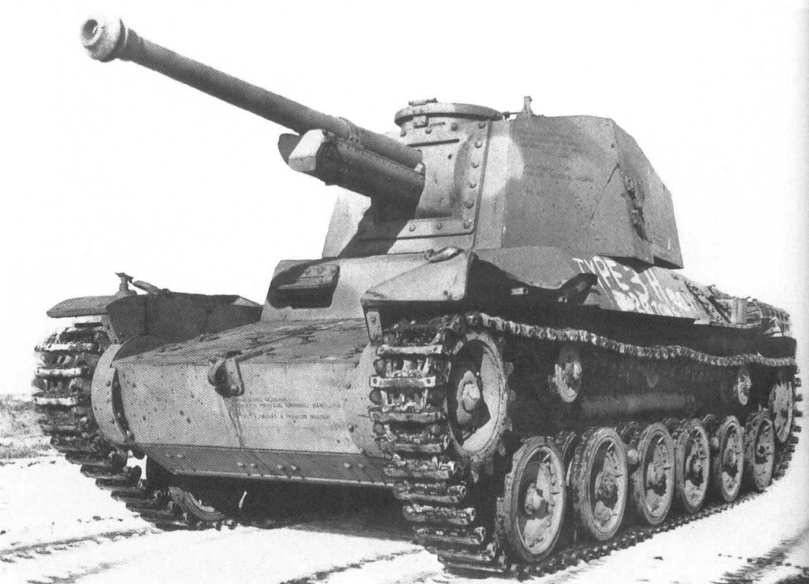

The Type 3 Chi-Nu was a Japanese medium tank developed in 1943–44 to counter increasingly powerful Allied armor in the Pacific Theater. It was an improvement over the earlier Type 97 Chi-Ha, featuring a larger turret, thicker armor, and a more powerful main gun. Designed late in the war, it was intended primarily for the defense of the Japanese home islands rather than overseas combat. The Type 3 Chi-Nu represented the peak of Japanese medium tank development in WWII, combining firepower, armor, and mobility within the limitations of Japan’s industrial and material constraints.

- Characteristics:
- Type: Medium tank
- Weight: 19 tons
- Crew: 5
- Gun: 75mm
- Speed: 38 km/h